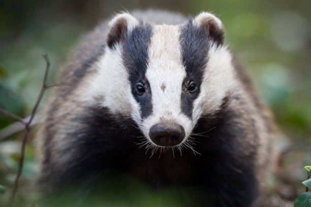

Viktig fakta om grävlingar
Den europeiska grävlingen heter Meles meles på latin. Den väger vanligtvis mellan 10 och 16 kilo och blir cirka 70-80 cm lång. Hanarna är ofta något större än honorna och till skillnad från många andra mårdjur så har grävlings par en hög tendens att stanna ihop resten av livet. Grävlingar är generellt inte farliga för människor eftersom dem är skygga och väljer att fly istället för att gå till anfall mot människor. I en konflikt så kan människan motstå grova rivsår och djupa gnag med deras hugtänder, detta sker bara om människan eskelerar eller hotar grävlingen.
Grävlingen är en allätare. Den äter maskar, insekter, bär, frukt, smågnagare och ibland även fågelägg. På hösten äter den mycket för att bygga upp fettlager inför vintern, likt så som björnar brukar göra innan dem går in i ide för vintern. Förökningssäsongen för den europeiska grävlingen sker under våren och sommaren. Honan födder inte barnen förän flera månader i efterhand, oftast i december eller januari. Under denna period så är dem mer aggressiva än vanligtvis
Viktiga punkter
- Grävlingen är nattaktiv
- Den sover ofta i samma gryt i många år
- Förökar sig under våren och födds under vintern
- Grävlingen har starka klor som är bra för grävning
Vill du läsa mer vetenskaplig information kan du besöka WWF:s webbplats
